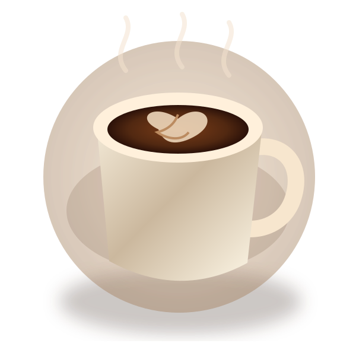

Notas intensas, corpo presente, ritual curto.
R$ 8 · fictícioCAFÉ DE ORIGEM / DEMONSTRAÇÃO CASTLEA pausa
A pausa
tem gosto.
Uma cafeteria imaginária que celebra o ritual diário. Um projeto original de interface com menu interativo e composição autoral.
Explorar o menu ↗
PEQUENOS RITUAIS
GRANDES PAUSAS ✳
GRANDES PAUSAS ✳